Gewöhnliche Zykloide wird eine Kurve genannt, die von einem Peripheriepunkt eines Kreises beschrieben wird, der auf einer Geraden abrollt, ohne zu gleiten.
Die Gleichung der gewöhnlichen Zykloide lautet in Parameterform
| 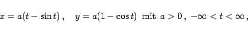 | (2.231a) |
wobei a der Radius des Kreises und t der Wälzwinkel 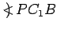 sind, und in kartesischen Koordinaten
| 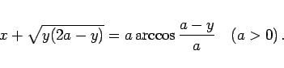 | (2.231b) |
Die Kurve ist periodisch mit der Periode (Basis der Zykloide) 
Sie hat Spitzen bei 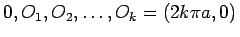, die Scheitelpunkte Ak liegen bei
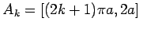.
Die Länge des Bogens  ist 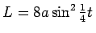, die Länge eines Zweiges 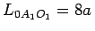.
ist 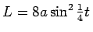, die Länge eines Zweiges 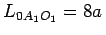.
Der Flächeninhalt beträgt 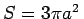.
Der Krümmungsradius ist 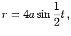 in den Scheiteln 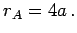
Die Evolute einer Zykloide ist eine kongruente Zykloide; sie ist in der Abbildung grün gezeichnet.